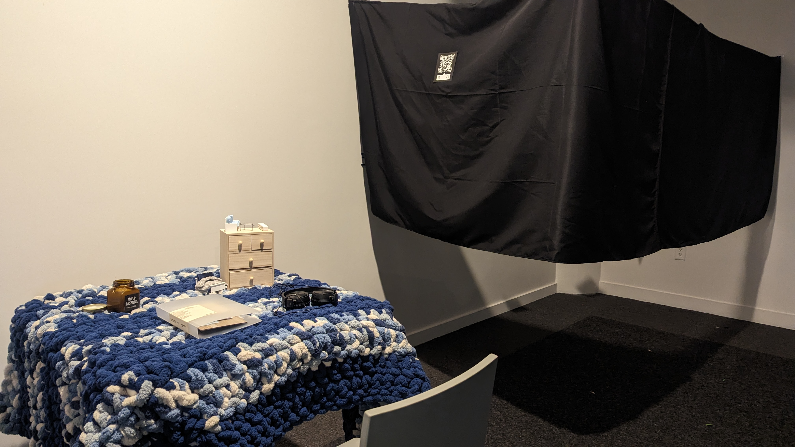
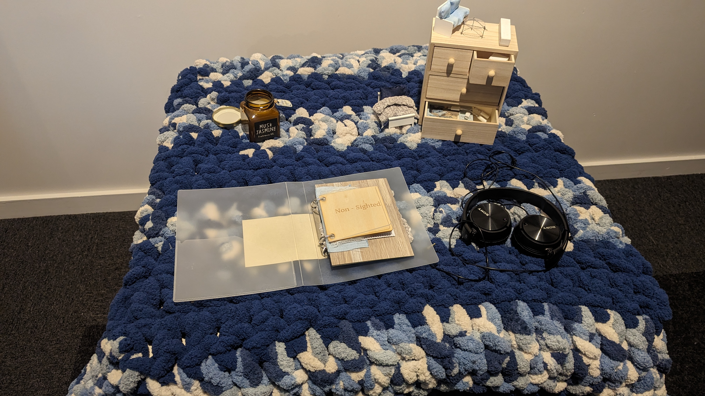
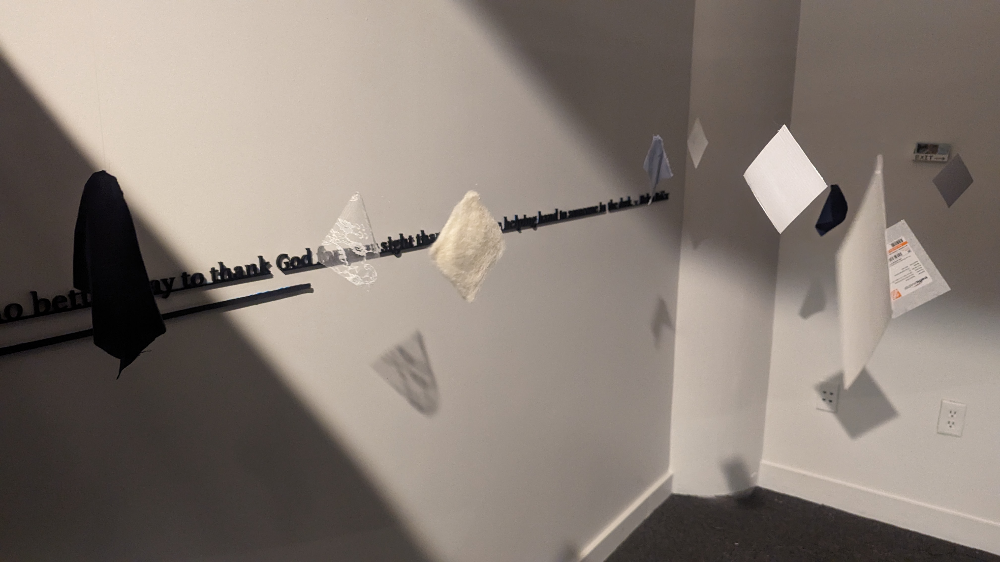
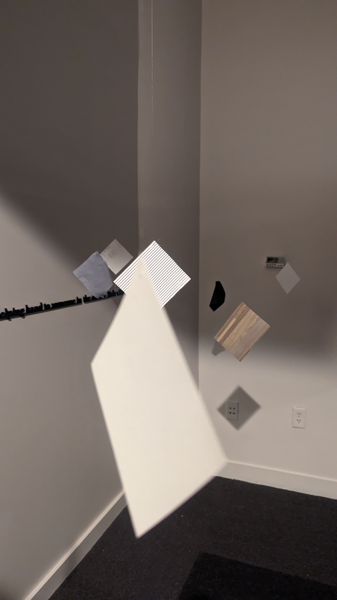
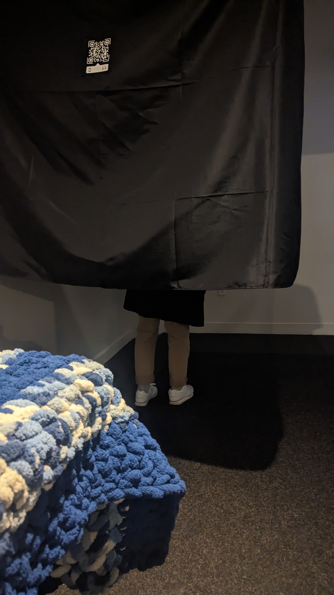

Non-Sighted
Undergrad

Non-Sighted is a mixed media immersive installation focusing on all the senses other than seeing.
It is an experience that encourages people to explore the space with their touch, hearing, and even smell. All the feelings build an imagery space based on people’s knowledge of the surrounding world. At the end of the experience, there is an “answer” to what the space is. It is a little cozy apartment room, but it is absolutely not the only answer.





It is a dark hallway with floating samples of materials. Instructions are given by audio, through the QR code at the entrance of the installation.
The quote on the wall is laser cut, with the braille version of the same quote 3D printed under it. It says There is no better way to thank God for your sight than by giving a helping hand to someone in the dark. — Helen Keller. It is not only there as a decoration or a quote that is about the piece, but also a guide that help people locating where the hanging objects are.
Instructions
Full Transcript of Audio instruction
Please stand still and wait until I tell you to enter. Please listen carefully to this instruction.
Hello. Welcome to the world of non-sighted. If you are not wearing headphones right now, it will be great if you can put them on. You can feel free to use your own, or the set provided here. Now, please close your eyes.
Once you enter the way, please try to feel everything you run into, you can touch, smell or do anything to them, but please try to be gentle with them, some of them are not the strongest material. When you interact with them, you can imagine a space you are in which has all these materials. Try to slow down, and spend some time with your feelings. If you are worrying about finding your way or suddenly run into something, there will be something on the wall, and you can use it as a guide. It is about the same height as the objects. There will be a card for you at the other end of the way that tells you Yiping’s answer of what the space is, but it is absolutely not the only answer, and please feel free to take a card with you.
Thank you for your patience. Now, please enter with your eyes closed, and it will be better if you can keep them closed until you reach the end of the way.
After the instructions, the audio doesn’t end, but continues with some room ambience that make up the hearing part of the experience.
Presentation
There is also a complied version of the experience in a binder on the table at the entrance. The table can also serve as an exhibiting piece on it's own. It created a cozy space with the crocheted blanket table cloth and the air freshing gel, along with the mini furniture.
The binder included swatches of all the materials, including the ones that are eliminated from the installation because of safety hazards, and a written piece explaining my concept.
Watch on Vimeo
Full Written Piece
I first got into the topic of losing sight because of a novel, but I never thought about it until last summer, because my aunt got an eye surgery and there were two weeks that she had to cover her eyes. I started to seriously imagine what life would be like if I couldn’t see.
My aunt has been talking about how she will just simply be blind one day before she gets her surgery, and I didn’t like hearing that. I pray that will never happen to her, or to me. However, through the process of me learning more about non-sighted individuals, I started to feel it is not that unacceptable. I tried for the first time to enter my bathroom at night and fully close the door, so there won’t be any bit of light in. I found that I can still use the bathroom without any problem, then I tried to wash my hand as well in the dark, and I didn’t knock anything over. A few days later, I heard about a cousin who is in her 30s also talking about how she thinks she will turn blind one day, and her loved ones will take care of her nicely. I was moved, and hope that will be true if it ever gets to that point.
I still wish that I won’t turn blind one day, but instead of thinking about it as having a terrible effect on my life, now I think about it as learning more about this world with a different aspect. The world is also beautiful without vision, through sound, smell, texture and feeling. There are so many things that I don’t pay attention to because I can see, but when I close my eyes, I can hear the wind, smell the water, and feel love around me.
During the process of working on my thesis, I researched a lot on accessibility design and products for blind. I learned how braille and the white cane works, and I found out that there are way more people who are working to help the blind community. There is software that helps them see the world, and there are also games designed for non-sighted people. There are also games everyone plays like Hearthstone that have really good accessibility design and plug-ins so blind individuals can also play. Being blind doesn’t mean losing any joy in life, but just enjoying life with a different aspect. There are apps like Be My Eyes that reads the surroundings with descriptions from volunteers or even AIs like ChatGPT to help blind individuals “see” the world.
The best way to help them if you see a blind individual in the public space is to move out of their way, don’t suddenly talk or touch them, that might be scary to them. If you see them having a problem, then gently ask them if they need help directly, but don’t touch them if they haven’t clearly agreed. Also, if they are bringing a guide dog, don’t talk to or pet their dog without permission.
As designers, accessibility design might not be the main focus of every designer, but there are tiny things every designer can do to help non-sighted individuals. For example, designers should make sure to add clear alt-text for websites and run through those accessibility tests for colors and font size. Now as I am working around the city, I pay attention to signs and always think about whether they will pass the accessibility test for the low vision people to see.
Now, I constantly try seeing the world with my ears, nose, and hands, and trust there is enough love and people are really trying to help if I will ever need to experience the world in the dark. So, I want to end with a quote from Helen Keller: “There is no better way to thank God for your sight than by giving a helping hand to someone in the dark.”
Design Process
This project went through many versions. It started as a game with the goal of escaping the room, but players need to play it blind folded, so they can only explore the space with sound in the space and vibration on the controller when they run into something. However, I think it is not strong enough to convince the idea of feeling the world non sighted, even it could be a nice game design concept.
Then, it moved in the direction of a physical installation. At first, I wanted it to be a game like experience. It is a miniature room completely made of real material, and people will be trying to put an object from the room back to their proper position blind folded. However, considering the fact people might not want to share a blind fold, I switched it to turning on the light in the room with a light switch in the miniature room. However, that is not realistic either because of fire safety regulations.
At the end, it ended up with the current design of feeling and imagining the space around. I didn’t give up on any concept, but delivered in a completely different set up.
References
Please check out the Parsons Design and Technology Thesis 2023 Website Entropy.
Please check out the page of this project on Entropy.
Thank to all my peers of my Thesis class and faculties that helped me through the process.